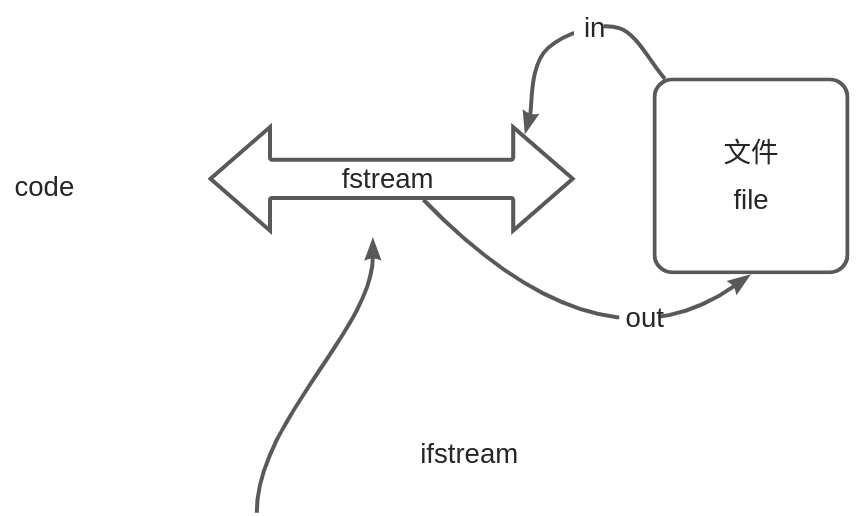

文件流操作
1. 文件处理简要概述
文件处理是计算机编程中一个重要的主题，它涉及到读取和写入文件，以及对文件进行各种操作。文件处理允许程序与外部存储交互，实现数据的持久性保存。以下是文件处理的基本概念和用途：
文件是一组相关数据的集合，可以是文本文件（包含字符）或二进制文件（包含任意数据）。
C++ 操作一个文件的流程主要包括打开文件、读写文件、定位文件位置、关闭文件等步骤
打开、操作、关闭 >三步走
C++提供了丰富的文件处理功能，主要通过标准库中的文件流（fstream）类来实现。

2. 文件的打开和关闭
在C++中，fstream 类是用于文件操作的重要类。它继承自 ifstream 和 ofstream 类，因此可以同时用于文件的读取和写入操作。以下是文件的打开和关闭流程：
如何打开文件：
使用 fstream 类的构造函数可以打开一个文件。构造函数的参数包括文件名和打开模式。
#include <fstream>
int main() {
// 打开文件（默认为输出模式）
std::fstream file("laojia.txt", std::ios::out);
// 进行文件操作...
// 关闭文件
file.close();
return 0;
}
打开模式说明：下面是使用表格展示文件打开模式说明的示例：
| 模式 | 含义 |
|---|---|
| std::ios::in | 以输入模式打开文件，用于读取数据。 |
| std::ios::out | 以输出模式打开文件，用于写入数据。 |
| std::ios::app | 以追加模式打开文件，新写入的内容会添加到文件末尾。append |
| std::ios::ate | 打开文件并定位到文件末尾。 atend |
| std::ios::binary | 以二进制模式打开文件，用于处理二进制数据。 |
多个模式之间用“|”运算符，联合。
关于in和out的困惑，画一幅画。  如果文件不使用 close() 关闭会有什么问题？
Note
- 资源泄漏： 每次打开文件都会分配一些系统资源，如果不及时关闭文件，可能会导致资源泄漏，最终影响程序性能。
- 文件锁定： 在某些操作系统中，文件可能会被锁定，防止其他程序或进程访问。如果文件没有关闭，其他程序可能无法正常访问该文件。
- 数据不稳定： 未关闭的文件可能会导致数据不稳定，因为可能尚未将所有的写入操作完全刷新到磁盘上。
就像你同时为两个领导服务，你是什么感受？
3. 写文件
在C++中，使用 ofstream 类可以方便地进行文件写入操作。以下是一些写文件的常见操作：
3.1. 使用 ofstream 类写入文本文件
#include <iostream>
#include <fstream>
using namespace std;
int main() {
// 打开文件进行写入
ofstream outputFile("output.txt");
// 检查文件是否成功打开
if (!outputFile.is_open()) {
cerr << "Unable to open file for writing." << endl;
return 1; // 退出程序，返回错误状态码
}
// 写入内容
outputFile << "Hello, this is a line of text." << endl;
// 关闭文件
outputFile.close();
return 0;
}
在这个例子中，我们使用 ofstream 打开名为 "output.txt" 的文件进行写入，然后将一行文本写入文件。最后，我们使用 close() 函数关闭文件。
3.2. 写入整行
#include <iostream>
#include <fstream>
using namespace std;
int main() {
// 打开文件进行写入
ofstream outputFile("output.txt");
// 检查文件是否成功打开
if (!outputFile.is_open()) {
cerr << "Unable to open file for writing." << endl;
return 1; // 退出程序，返回错误状态码
}
// 写入整行
outputFile << "This is a line of text." << endl;
// 关闭文件
outputFile.close();
return 0;
}
3.3. 写入字符
#include <iostream>
#include <fstream>
using namespace std;
int main() {
// 打开文件进行写入
ofstream outputFile("output.txt");
// 检查文件是否成功打开
if (!outputFile.is_open()) {
cerr << "Unable to open file for writing." << endl;
return 1; // 退出程序，返回错误状态码
}
// 写入字符
outputFile.put('A');
// 关闭文件
outputFile.close();
return 0;
}
3.4. 使用write 函数
下面是一个简单的C++写文件的示例，使用 ofstream 类和 write 函数：
#include <iostream>
#include <fstream>
int main() {
// 打开文件以写入数据
std::ofstream outFile("example.txt", std::ios::binary);
if (!outFile) {
std::cerr << "无法打开文件！" << std::endl;
return 1;
}
// 数据准备
char data[] = "Hello, World!";
size_t size = sizeof(data);
// 将数据写入文件
outFile.write(data, size);
// 关闭文件
outFile.close();
std::cout << "数据成功写入文件 'example.txt'" << std::endl;
return 0;
}
在这个示例中，我们首先创建一个 ofstream 对象 outFile，并打开一个名为 "example.txt" 的文件，以二进制模式写入数据。接着，我们准备了一个包含字符串 "Hello, World!" 的字符数组 data，并使用 write 函数将数据写入文件。最后，我们关闭文件并输出成功的消息。
3.5. 文件不存在时的处理
在打开文件进行写入操作时，如果文件不存在，ofstream 会尝试创建文件。如果创建文件失败，可以使用 is_open() 函数检查文件是否成功打开，以便进行错误处理。在上述例子中，都包含了对文件是否成功打开的检查。
3.6. 写文件常用函数
在C++中写文件时，常用的一些成员函数包括 ofstream 类的成员函数。下面是一些主要的写文件成员函数以及它们的作用：
-
open：
- 作用：打开文件，关联文件名和输出流。
- 示例：
ofstreamObject.open("filename.txt");
-
is_open：
- 作用：检查文件是否成功打开。
- 示例：
if (ofstreamObject.is_open()) { /* 文件成功打开 */ }
-
close：
- 作用：关闭文件。
- 示例：
ofstreamObject.close();
-
seekp：
- 作用：设置文件写入位置。
- 示例：
ofstreamObject.seekp(0, ios::beg);
-
tellp：
- 作用：获取当前的文件写入位置。
- 示例：
streampos position = ofstreamObject.tellp();
-
write：
- 作用：将数据写入文件。
- 示例：
ofstreamObject.write(data, size);
-
put：
- 作用：将一个字符写入文件。
- 示例：
ofstreamObject.put('A');
-
operator<<：
- 作用：用于插入数据到文件，类似于输出流的
<<操作符。 - 示例：
ofstreamObject << "Hello, World!" << endl;
- 作用：用于插入数据到文件，类似于输出流的
-
good：
- 作用：检查流的状态是否正常，返回
true表示正常。 - 示例：
if (ofstreamObject.good()) { /* 流状态正常 */ }
- 作用：检查流的状态是否正常，返回
-
bad：
- 作用：检查流是否处于错误状态，返回
true表示有错误。 - 示例：
if (ofstreamObject.bad()) { /* 流处于错误状态 */ }
- 作用：检查流是否处于错误状态，返回
-
fail：
- 作用：检查流是否处于失败状态，返回
true表示有失败。 - 示例：
if (ofstreamObject.fail()) { /* 流处于失败状态 */ }
- 作用：检查流是否处于失败状态，返回
-
eof：
- 作用：检查是否已到达文件末尾。
- 示例：
if (ofstreamObject.eof()) { /* 已到达文件末尾 */ }
这些成员函数允许你在写文件时进行各种不同类型的操作，包括设置写入位置、写入数据、插入数据等，同时也可以通过状态函数检查文件流的状态。
4. 读文件
使用 ifstream 类读取文本文件
在C++中，可以使用 ifstream 类来方便地读取文本文件
4.1. 读取方式

4.2. 读文件示例代码
- 逐行读取： 使用
getline函数逐行读取文件的内容。
#include <iostream>
#include <fstream>
#include <string>
using namespace std;
int main() {
ifstream inputFile("example.txt");
string line;
while (getline(inputFile, line)) {
cout << line << endl;
}
inputFile.close();
return 0;
}
在你提供的C++代码中，getline 函数返回一个 istream& 类型的引用，表示输入流对象。在这个特定的情境中，getline 用于从文件流 inputFile 中读取一行文本，并将该行文本存储到字符串变量 line 中。
具体来说，getline(inputFile, line) 的作用是从文件中读取一行文本，将其存储到 line 变量中，并返回输入流对象 inputFile 的引用。如果成功读取一行文本，条件 while (getline(inputFile, line)) 就为真，进入循环体并输出当前行的内容到标准输出流 cout 中。当文件读取到末尾或发生错误时，getline 返回 false，循环结束，程序关闭文件并返回 0。
解决中文乱码问题
#include <iostream>
#include <fstream>
#include <string>
#include <locale>
#include <codecvt>
#include <corecrt_io.h>
#include <fcntl.h>
using namespace std;
int main() {
wifstream inputFile("a.txt", ios::in | ios::binary);
// 设置输入流为 UTF-8
inputFile.imbue(locale(inputFile.getloc(), new codecvt_utf8<wchar_t>));
// 设置控制台输出为 UTF-8
_setmode(_fileno(stdout), _O_U8TEXT);
wstring line;
while (getline(inputFile, line)) {
wcout << line << endl;
}
inputFile.close();
return 0;
}
- 按单词读取： 使用输入运算符
>>从文件中读取一个单词。
#include <iostream>
#include <fstream>
#include <string>
using namespace std;
int main() {
ifstream inputFile("example.txt");
string word;
while (inputFile >> word) {
cout << word << endl;
}
inputFile.close();
return 0;
}
- 按字符读取： 使用
get函数从文件中读取一个字符。
#include <iostream>
#include <fstream>
using namespace std;
int main() {
ifstream inputFile("example.txt");
char character;
while (inputFile.get(character)) {
cout << character << endl;
}
inputFile.close();
return 0;
}
- 二进制读取： 使用
read函数按字节读取二进制数据。
#include <iostream>
#include <fstream>
#include <string>
using namespace std;
int main() {
// 打开文件
fstream inputFile("laojia.txt", ios::in | ios::binary);
// 检查文件是否成功打开
if (!inputFile.is_open()) {
cerr << "无法打开文件。" << endl;
return 1;
}
// 获取文件大小
inputFile.seekg(0, ios::end);
streampos fileSize = inputFile.tellg();
// 检查文件大小是否有效
if (fileSize < 0) {
cerr << "获取文件大小时发生错误。" << endl;
inputFile.close();
return 1;
}
// 将文件指针重置到文件开头
inputFile.seekg(0, ios::beg);
// 输出文件大小
cout << "文件大小: " << fileSize << " 字节" << endl;
// 定义缓冲区大小
const int bufferSize = 100;
char buffer[bufferSize];
// 逐块读取文件
while (!inputFile.eof()) {
// 读取缓冲区大小的数据块
inputFile.read(buffer, sizeof(buffer));
// 处理二进制数据，以十六进制格式输出每个字节
for (int i = 0; i < inputFile.gcount(); ++i) {
cout << hex << static_cast<int>(buffer[i]) << " ";
}
}
// 关闭文件
inputFile.close();
return 0;
}
每种方式都有其适用的场景，选择合适的读取方式取决于文件内容的结构和处理需求。
4.3. 异常处理
在进行文件操作时，应该考虑到文件可能不存在或打开失败的情况。这时可以使用异常处理来捕获并处理异常
#include <iostream>
#include <fstream>
#include <string>
#include <stdexcept>
using namespace std;
int main() {
try {
// 尝试打开文件
ifstream inputFile("nonexistent.txt");
// 检查文件是否成功打开
if (!inputFile.is_open()) {
throw runtime_error("Unable to open file.");
}
// 读取文件内容
string line;
while (getline(inputFile, line)) {
cout << line << endl;
}
// 关闭文件
inputFile.close();
} catch (const exception& e) {
cerr << "Error: " << e.what() << endl;
}
return 0;
}
在这个示例中，我们使用了 try 和 catch 块来捕获异常。如果文件打开失败，会抛出一个 runtime_error 异常，并在 catch 块中输出错误信息。这样可以更好地处理文件不存在等异常情况。
4.4. 相关成员函数
在C++中，对文件进行读取时，常用的一些 istream 和 ifstream 成员函数包括：
4.4.1. 对于 istream（输入流）：
-
operator>>：
- 作用：用于从流中提取数据。
- 示例：
istreamObject >> variable;
-
getline：
- 作用：从输入流中读取一行数据。
- 示例：
getline(istreamObject, stringVariable);
-
get：
- 作用：从输入流中读取一个字符。
- 示例：
charVariable = istreamObject.get();
-
ignore：
- 作用：从输入流中忽略指定数量的字符，或者直到遇到指定的分隔符。
- 示例：
istreamObject.ignore(100, '\n');
-
peek：
- 作用：查看输入流中的下一个字符，但不从流中移除它。
- 示例：
charVariable = istreamObject.peek();
-
putback：
- 作用：将一个字符放回输入流。
- 示例：
istreamObject.putback('c');
4.4.2. 对于 ifstream（文件输入流）：
-
open：
- 作用：打开文件，关联文件名和输入流。
- 示例：
ifstreamObject.open("filename.txt");
-
is_open：
- 作用：检查文件是否成功打开。
- 示例：
if (ifstreamObject.is_open()) { /* 文件成功打开 */ }
-
close：
- 作用：关闭文件。
- 示例：
ifstreamObject.close();
-
seekg：
- 作用：设置文件读取位置。
- 示例：
ifstreamObject.seekg(0, ios::beg);
-
tellg：
- 作用：获取当前的文件读取位置。
- 示例：
streampos position = ifstreamObject.tellg();
-
good：
- 作用：检查流的状态是否正常，返回
true表示正常。 - 示例：
if (ifstreamObject.good()) { /* 流状态正常 */ }
- 作用：检查流的状态是否正常，返回
-
bad：
- 作用：检查流是否处于错误状态，返回
true表示有错误。 - 示例：
if (ifstreamObject.bad()) { /* 流处于错误状态 */ }
- 作用：检查流是否处于错误状态，返回
-
fail：
- 作用：检查流是否处于失败状态，返回
true表示有失败。 - 示例：
if (ifstreamObject.fail()) { /* 流处于失败状态 */ }
- 作用：检查流是否处于失败状态，返回
-
eof：
- 作用：检查是否已到达文件末尾。
- 示例：
if (ifstreamObject.eof()) { /* 已到达文件末尾 */ }
这些函数允许你在读取文件时进行各种不同类型的操作，从整行读取到逐个字符的读取，以及对文件的状态进行检查和控制。
5. 文件指针和定位
在C++中，文件指针是用于指示文件读写位置的工具。seekg 用于定位输入文件指针，而 seekp 用于定位输出文件指针。以下是一些文件指针和定位的常见用法：
seekg=读取 seek+ get，seekp=写入 seek+put
5.1. 文件指针的作用和用法
-
文件指针的作用：
- 文件指针用于指示文件的当前读写位置。
- 允许在文件中进行随机访问，而不仅仅是按顺序读写文件。
-
文件指针的用法：
seekg和seekp函数用于定位输入和输出文件指针的位置。seekg(offset, origin)：将输入文件指针移动到距离origin处offset个字节的位置。seekp(2, ios::beg)：将输出文件指针移动到距离origin处offset个字节的位置。ios::beg表示相对于文件开头，ios::curcurrent表示相对于当前位置，ios::end表示相对于文件末尾。
文件指针的灵活性使得在文件中执行各种定位和操作成为可能，可以随机访问文件的不同位置，而不仅仅是按照顺序进行读写。
5.2. 使用 seekg 定位输入文件指针
#include <iostream>
#include <fstream>
using namespace std;
int main() {
// 打开文件进行读取
ifstream inputFile("example.txt");
// 检查文件是否成功打开
if (!inputFile.is_open()) {
cerr << "Unable to open file for reading." << endl;
return 1; // 退出程序，返回错误状态码
}
// 定位文件指针到第五个字符处
inputFile.seekg(4, ios::beg);
// 读取并输出文件指针当前位置后的内容
char ch;
while (inputFile.get(ch)) {
cout << ch;
}
// 关闭文件
inputFile.close();
return 0;
}
在这个例子中，我们使用 seekg 将输入文件指针定位到文件的第五个字符处，然后读取并输出文件指针当前位置后的内容。
5.3. 使用 seekp 定位输出文件指针
#include <iostream>
#include <fstream>
using namespace std;
int main() {
// 打开文件进行写入
ofstream outputFile("output.txt");
// 检查文件是否成功打开
if (!outputFile.is_open()) {
cerr << "Unable to open file for writing." << endl;
return 1; // 退出程序，返回错误状态码
}
// 定位文件指针到文件末尾
outputFile.seekp(0, ios::end);
// 写入内容到文件末尾
outputFile << "This text is added at the end." << endl;
// 关闭文件
outputFile.close();
return 0;
}
在这个例子中，我们使用 seekp 将输出文件指针定位到文件末尾，然后在文件末尾写入内容。
5.4. 注意事项
在使用 seekg、seekp 和 tellg 函数时，有一些要点和注意事项需要考虑：
tell g
5.4.1. seekg 和 seekp 要点：
-
定位位置和基准：
seekg(offset, origin)用于设置输入流的读取位置。seekp(offset, origin)用于设置输出流的写入位置。offset表示偏移量，origin表示定位的基准，可以是std::ios::beg（文件开头）、std::ios::cur（当前位置）或std::ios::end（文件末尾）。
-
以字节为单位：
seekg和seekp操作的单位是字节，而不是字符。- 如果在文本模式下，C++ 文件流可能会考虑字符的编码和换行符的转换。
-
二进制模式：
- 如果需要按字节进行精确定位，可以以二进制模式打开文件，例如
std::ios::binary。 - 例如：
std::ofstream file("example.txt", std::ios::binary);
- 如果需要按字节进行精确定位，可以以二进制模式打开文件，例如
-
防止越界：
- 在使用
seekg和seekp之前，确保偏移量不会导致越界。可以通过tellg和tellp获取当前位置，然后在进行偏移之前检查。
- 在使用
5.4.2. tellg 要点：
-
获取当前位置：
tellg()用于获取输入流的当前读取位置。- 返回类型是
std::streampos，stream postion表示相对于文件开头的字节偏移。
-
适用于二进制和文本模式：
tellg的行为不受文件模式（二进制或文本）的影响，它返回的是字节偏移量。
-
搭配
**seekg**使用：tellg常常与seekg一起使用，用于获取当前位置并在以后的某个时候通过seekg恢复到相同的位置。
5.4.3. 注意细节
-
文件打开模式：
- 打开文件时的模式（文本或二进制）会影响
seekg和seekp的行为，尤其是在文本模式下可能会有字符编码和换行符转换的影响。
- 打开文件时的模式（文本或二进制）会影响
-
检查文件是否成功打开：
- 在打开文件后，最好检查文件是否成功打开，以防止后续的文件操作失败。
-
防止越界和错误处理：
- 在进行文件定位时，确保不会越界。可以通过检查
tellg或tellp的返回值来进行错误处理。
- 在进行文件定位时，确保不会越界。可以通过检查
-
关闭文件：
- 在文件操作完成后，不要忘记关闭文件。可以使用
close函数来关闭文件流。
- 在文件操作完成后，不要忘记关闭文件。可以使用
综上所述，使用这些函数时要注意文件的打开模式、偏移量的计算、二进制模式等因素，以确保文件操作的正确性和可靠性。在进行文件定位和操作时，经常检查返回值，进行错误处理是一个良好的实践。
6. 实例项目（处理二进制图片）
6.1. 需求
- 第一步：读取一个图片
- 第二步：将图片的每一个通道数据 提取出来分别写入到不同TXT文件中。

6.2. 需求实现
下面是一个简单的实例项目
#include <iostream>
#include <fstream>
#include <vector>
#include <string>
using namespace std;
// 像素结构体，包含红、绿、蓝通道（可根据需要添加其他通道，如透明度）
struct Pixel {
uint8_t red;
uint8_t green;
uint8_t blue;
// 添加其他通道（例如 alpha 通道）时，请在此处增加对应的成员变量
};
int main() {
const char* inputImagePath = "test.jpg";
// 打开图像文件
ifstream imageFile(inputImagePath, ios::binary);
if (!imageFile.is_open()) {
cerr << "无法打开图像文件: " << inputImagePath << endl;
return 1;
}
// 读取图像头以获取尺寸（假设为 JPEG 格式）
imageFile.seekg(0, ios::end);
streampos fileSize = imageFile.tellg();
imageFile.seekg(0, ios::beg);
const int headerSize = 2; // JPEG 头部大小
const int channels = 3; // 假设为 RGB 图像
if (fileSize <= headerSize) {
cerr << "图像文件无效: " << inputImagePath << endl;
return 1;
}
int imageWidth = 0;
int imageHeight = 0;
// 跳过 JPEG 头部
imageFile.ignore(headerSize);
// 读取像素数据
const int pixelDataSize = static_cast<int>(fileSize - imageFile.tellg());
const int pixelsCount = pixelDataSize / channels;
// 使用 vector 存储像素数据，它会在销毁时自动释放内存
vector<Pixel> pixels(pixelsCount);
imageFile.read(reinterpret_cast<char*>(pixels.data()), pixelDataSize);
imageFile.close();
// 将通道数据写入 TXT 文件
for (int channel = 0; channel < channels; ++channel) {
string outputFileName = "channel_" + to_string(channel + 1) + ".txt";
ofstream outputFile(outputFileName);
if (!outputFile.is_open()) {
cerr << "无法打开输出文件: " << outputFileName << endl;
return 1;
}
// 遍历所有像素，并将指定通道的值写入文件
for (const auto& pixel : pixels) {
uint8_t value;
switch (channel) {
case 0:
value = pixel.red;
break;
case 1:
value = pixel.green;
break;
case 2:
value = pixel.blue;
break;
// 添加其他通道时，在此处增加对应 case
default:
cerr << "不支持的通道" << endl;
return 1;
}
outputFile << static_cast<int>(value) << " ";
}
outputFile.close();
cout << "通道 " << channel + 1 << " 数据已写入文件: " << outputFileName << endl;
}
return 0;
}
请注意，这只是一个简单的例子，真实的图像处理可能需要更复杂的算法和库。在实际应用中，你可能需要使用图像处理库如OpenCV等来更方便地处理图像。